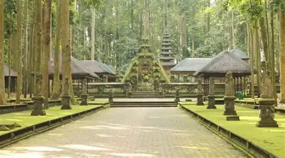

Daya Tarik Wisata Sangeh
Tiga keistimewaan utama yang menjadikan Sangeh destinasi ekowisata dan spiritual ternama

Pura Suci Bukit Sari
Cagar budaya peninggalan Kerajaan Mengwi abad ke-17 yang berdiri sakral di jantung hutan pala. Dikelilingi suasana tenang dan aura spiritual yang damai.

Hutan Pala & Pohon Lanang Wadon
Kawasan hutan lindung seluas 13,91 hektar dengan pohon pala berusia ratusan tahun. Tepat di pelataran depan terdapat "Pohon Lanang Wadon" yang unik dan melegenda.

Habitat Ratusan Kera Jinak
Rumah alami bagi kawanan kera ekor panjang (Macaca fascicularis). Kera di Sangeh tergolong jinak, terbiasa berinteraksi dan dapat diajak berfoto selfie dengan aman.
Jadwal & Tarif Tiket Masuk
Daftar tarif resmi tiket masuk dan fasilitas pendukung di Objek Wisata Sangeh
Rincian Tiket Masuk Resmi
| Kategori Pengunjung | Dewasa | Anak-anak |
|---|---|---|
| Wisatawan Domestik (WNI) | Rp 15.000 | Rp 5.000 |
| Wisatawan Mancanegara (WNA) | Rp 75.000* | Rp 50.000* |
| Tarif Parkir Kendaraan | ||
| Sepeda Motor | Gratis | |
| Mobil Pribadi | Rp 5.000 / unit | |
| Bus Pariwisata | Rp 10.000 / unit | |
Jam Operasional & Fasilitas
-
Buka Setiap Hari Senin s/d Minggu & Hari Libur08.00 - 17.00 WITA
- Pemandu Lokal (Local Guide) ramah & berpengalaman
- Jalur Paving Teduh (Aman untuk anak-anak & lansia)
- Penyewaan Kain Adat Bali untuk masuk area Pura
- Toilet Bersih, Gazebo Istirahat & Pasar Seni Lokal
Tanya Jawab Seputar Sangeh (FAQ)
Hal-hal yang sering ditanyakan sebelum berwisata ke Hutan Pala Sangeh
Siap Menikmati Kesegaran Alam Alas Pala Sangeh?
Rasakan kedamaian alam yang asri, udara hutan yang sejuk, dan keramahan satwa Bali bersama keluarga Anda.
Buka Petunjuk Arah di Google Maps